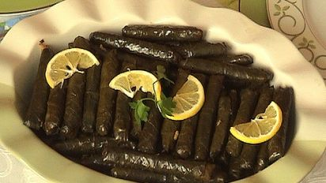

Dolma kan tillagas på många olika vis och detta recept är inspirerat från det irakiska köket. Urgröpta grönsaker som fylls med en kryddig färs- och risblandning som sedan får puttra i en sur och smakrik tomatsås.

Ingredienser
1 dl riskorn
800 gram Lammfärs
400 gram vinblad
1 dl paprikapuré
1 st röd paprika
3/4 dl olja
1,5 citron – pressad
1 näve persilja
1,5 tsk svartpeppar
2 msk salt
Koka riset med buljongtärningen, låt svalna. Finhacka paprikan och persiljan.
Lägg färsen i en bytta, riv ner löken och häll i den finhackade paprikan, Paprikapurén (kan bytas ut mot tomatpuré) och persiljan. Salta och krydda rejält med peppar och paprikapulver. Pressa ner en halv citron i färsen.
Klicka lite av färsblandningen mitt på varje blad och vik ihop till "tumtjocka" små paket. Placera dolmarna i botten på en stor kastrull.
Fyll dolmarna i kastrullen med vatten. Koka upp under lock. Låt sedan dolmarna koka på svag värme under lock i ca 50 min. Du känner på dolmarna om dom är klara. Häll av vattnet och servera direkt.